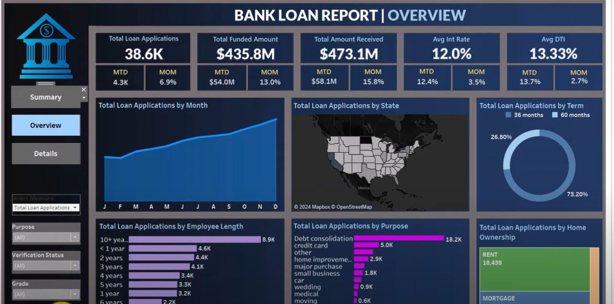

Projects
Bank Loan Analysis Dashboard (Tableau)

Developed an interactive Tableau dashboard visualizing key metrics for loan disbursement, interest rates, and borrower patterns. Incorporated filter-based analysis and map-based visual insights.
Book Recommender System (ML)


Built a content-based book recommendation engine using cosine similarity on user ratings and text features. Implemented a clean UI in Streamlit for live interaction.
Coffee Sales Dashboard (Excel)

Created an Excel dashboard to analyze coffee sales by roast type, region, and customer. Integrated slicers and data bars for dynamic visual filtering.
Drug Release Modeling (Simulation)

Modeled anti-VEGF drug release via topical and intravitreal routes using MATLAB. Estimated half-life from experimental data and integrated into compartmental kinetics.